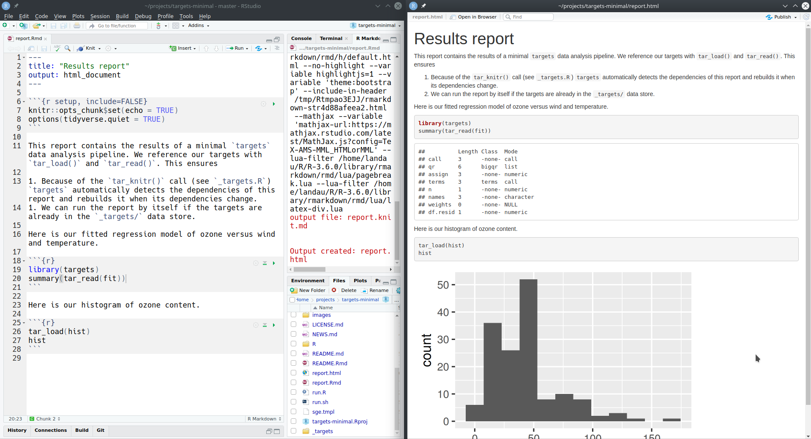
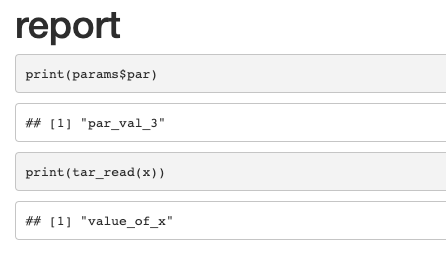

Chapter 10 External files and literate programming
The targets package automatically stores data and automatically responds to changed files to keep your targets up to date. The chapter below explains how to leverage this reproducibility for external datasets, external output files, and literate programming artifacts such as R Markdown reports. Real-world applications of these techniques are linked from here.
10.1 Internal data files
Each project has a local data store. This is usually a special _targets/ folder at the project root directory (where you call tar_make()). In targets version 0.3.1.9000 and above, you can set the location to something other than _targets/ using tar_config_set(), which writes to a project-level _targets.yaml file at the project root. The files in the data store are structured as follows.
_targets/ # Can be customized with tar_config_set().
├── meta/
├────── meta
├────── process
├────── progress
├── objects/
├────── target1
├────── target2
├────── branching_target_c7bcb4bd
├────── branching_target_285fb6a9
├────── branching_target_874ca381
├── scratch/ # tar_make() deletes this folder after it finishes.
└── user/ # gittargets users can put custom files here for data version control.Spreadsheets _targets/meta/meta keeps track of target metadata, _targets/meta/progress records runtime progress, and _targets/meta/process has high-level information (such as process ID) about the external R session orchestrating the targets. The scratch/ directory contains temporary files which can be safely deleted after tar_make() finishes. The _targets/objects/ folder contains the return values of the targets themselves.
A typical target returns an R object: for example, a dataset with tar_target(dataset, data.frame(x = rnorm(1000)), format = "fst") or a fitted model tar_target(model, biglm(ozone ~ temp + wind), format = "qs"). When you run the pipeline, targets computes this object and saves it as a file in _targets/objects/. The file name in _targets/objects/ is always the target name, and type of the file is determined by the format argument of tar_target(), and formats "fst" and "qs" are two of many choices explained in the help file of tar_target(). No matter what format you pick, targets watches the file for changes and recomputes the target in tar_make() if the the file gets corrupted (unless you suppress the file cue with tar_target(cue = tar_cue(file = FALSE))).
10.1.1 Data version control and the cloud
The chapter on Amazon cloud storage describes how to continuously upload and track each target as an object in an Amazon S3 bucket. As of version 0.9.0, this feature allows you to opt int automatic data version control. If your bucket has versioning enabled, then targets records the version ID of each target (in tar_meta(your_target)$path), and it uses that version ID to read the data and check the status. So if you revert the metadata file _targets/meta/meta to a prior state, then your pipeline will automatically revert to prior versions of your targets. This allows you to quickly switch your entire project to a previous state or alternate branch while keeping your AWS-backed targets in sync and up to date. It works best if you commit _targets/meta/meta to the same version control repository you use for your code. (https://happygitwithr.com is an excellent resource to get started with version control for code.)
If your S3 bucket has versioing enabled, then targets >= 0.8.1.9000 tracks the version of each target in the bucket automatically. That means if you revert your code and metadata file to a prior state, then your pipeline will revert to prior versions of your targets in the cloud, and those targets may be up to date. This is extremely useful if you are managing your project code and targets metadata with version control (e.g. Git) and frequently move among multiple branches. To check if data versioning is working properly, you can verify that the AWS S3 version IDs of your targets appear in tar_meta()$path.
Alternatively, for users without access to Amazon Web Services, gittargets is a data version control solution that works entirely locally. Designed for data analysis projects whose code is already under version control with Git, gittargets takes snapshots of the data store and linking those snapshots to commits in the code repository. This allows you to transition among multiple code branches without invalidating your pipeline: when you check out an old code branch and its data snapshot together, you restore your old targets while keeping the data up to date.
10.1.2 Cleaning up local internal data files
There are multiple functions to remove target storage or modify the metadata to force one or more targets to rerun in the next call to tar_make().
tar_destroy()is by far the most commonly used cleaning function. It removes the_targets/data store completely, deleting all the results fromtar_make()except for external files. Use it if you intend to start the pipeline from scratch without any trace of a previous run.tar_prune()deletes the data and metadata of all the targets no longer present in your current target script file (default:_targets.R). This is useful if you recently worked through multiple changes to your project and are now trying to discard irrelevant data while keeping the results that still matter.tar_delete()is more selective thantar_destroy()andtar_prune(). It removes the individual data files of a given set of targets from_targets/objects/while leaving the metadata in_targets/meta/metaalone. If you have a small number of data-heavy targets you need to discard to conserve storage, this function can help.tar_invalidate()is the opposite oftar_delete(): for the selected targets, it deletes the metadata in_targets/meta/metabut keeps the return values in_targets/objects/. After invalidation, you will still be able to locate the data files withtar_path()and manually salvage them in an emergency. However,tar_load()andtar_read()will not be able to read the data into R, and subsequent calls totar_make()will attempt to rebuild those targets.
10.2 Internal script files
Target Markdown automatically supplies a _targets.R file and supporting scripts in a folder called _targets_r/. These paths can be customized together the script argument of tar_config_set().
_targets_r/ # Can be customized with tar_config_set(script = "...").
├── globals/ # Code chunks to define globals and settings (tar_globals = TRUE)
├────── globals_chunk1.R # Names follow chunk names or the tar_name chunk opt.
├────── globals_chunk2.R
├────── ...
├── targets/ # Code chunks to define groups of one or more targets
├────── targets_chunk1.R
├────── targets_chunk2.R
└────── ...10.2.1 Cleaning up internal script files
Over time, the number of script files in _targets_r/ starts to build up, and targets has no way of automatically removing helper scripts files that are no longer necessary. To keep your pipeline up to date with the code chunks in the Target Markdown document(s), it is good practice to call tar_unscript() at the beginning of your first Target Markdown document. That way, extraneous/discarded targets are automatically removed from the pipeline when the document starts render.
10.3 External input files
To reproducibly track an external input file, you need to define a new target that has
- A command that returns the file path as a character vector, and
format = "file"intar_target().
When the target runs in the pipeline, the returned character vector gets recorded in _targets/meta, and targets watches the data file and invalidates the target when that file changes. To track multiple files this way, simply define a multi-element character vector where each element is a path. Each element can also be a directory, but this directory must not be empty at the time the target runs.
The first two targets of the minimal example demonstrate how to track an input file.
# _targets.R
library(targets)
path_to_data <- function() {
"data/raw_data.csv"
}
list(
tar_target(
raw_data_file,
path_to_data(),
format = "file"
),
tar_target(
raw_data,
read_csv(raw_data_file, col_types = cols())
)
)Above, raw_data_file is the dynamic file target. The file data/raw_data.csv exists before we ever run the pipeline, and the R expression for the target returns the character vector "data/raw_data.csv". (We use the path_to_data() function to demonstrate that you need not literally write "data/raw_data.csv" as long as the path is returned somehow.)
All subsequent targets that depend on the file must reference the file using the symbol raw_data_file. This allows targets’ automatic static code analysis routines to detect which targets depend on the file. Because the raw_data target literally mentions the symbol raw_data_file, targets knows raw_data depends on raw_data_file. This ensures that
raw_data_filegets processed beforeraw_data, andtar_make()automatically rerunsraw_dataifraw_data_fileor"data/raw_data.csv"change.
tar_visnetwork()If we were to omit the symbol raw_data_file from the R expression of raw_data, those targets would be disconnected in the graph and tar_make() would make incorrect decisions.
# _targets.R
library(targets)
path_to_data <- function() {
"data/raw_data.csv"
}
list(
tar_target(
raw_data_file,
path_to_data(),
format = "file"
),
tar_target(
raw_data,
read_csv("data/raw_data.csv", col_types = cols()) # incorrect
)
)tar_visnetwork()10.4 External output files
Output files have the same mechanics as input files. The target uses format = "file", and the return value is a character value of paths to existing files and nonempty directories. The only difference here is that the target’s R command writes to storage before it returns a value. For example, here is an output file target that saves a visualization.
tar_target(
plot_file,
save_plot_and_return_path(),
format = "file"
)Here, our custom save_plot_and_return_path() function does exactly what the name describes.
save_plot_and_return_path <- function() {
plot <- ggplot(mtcars) +
geom_point(aes(x = wt, y = mpg))
ggsave("plot_file.png", plot, width = 7, height = 7)
return("plot_file.png")
}10.5 Literate programming
targets has two ways to handle literate programming. The first is Target Markdown, which is covered in a different chapter. In Target Markdown, targets serves as a caching mechanism for projects that use R Markdown as the primary overarching workflow manager. The second way targets handles literate programming is to render lightweight dependency-aware R Markdown reports inside the individual targets of a pipeline. This second approach is covered in this section.
If you render an R Markdown report as part of a target, the report should be lightweight: mostly prose, minimal code, fast execution, and no output other than the rendered HTML/PDF document. In other words, R Markdown reports are just targets that document prior results. The bulk of the computation should have already happened upstream, and the most of the code chunks in the report itself should be terse calls to tar_read() and tar_load().
The report from the minimal example looks like this:

Above, the report depends on targets fit and hist. The use of tar_read() and tar_load() allows us to run the report outside the pipeline. As long as _targets/ folder has data on the required targets from a previous tar_make(), you can open the RStudio IDE, edit the report, and click the Knit button like you would for any other R Markdown report.

To connect the target with the pipeline, we define a special kind of target using tar_render() from the tarchetypes package instead of the usual tar_target(), which
- Finds all the
tar_load()/tar_read()dependencies in the report and inserts them into the target’s command. This enforces the proper dependency relationships. (tar_load_raw()andtar_read_raw()are ignored because those dependencies cannot be resolved with static code analysis.) - Sets
format = "file"(seetar_target()) sotargetswatches the files at the returned paths. - Configures the target’s command to return both the output report files and the input source file. All these file paths are relative paths so the project stays portable.
- Forces the report to run in the user’s current working directory instead of the working directory of the report.
- Sets convenient default options such as
deployment = "main"intar_target()andquiet = TRUEinrmarkdown::render().
The target definition looks like this.
library(tarchetypes)
target <- tar_render(report, "report.Rmd") # Just defines a target object.
target$command$expr[[1]]
#> tarchetypes::tar_render_run(path = "report.Rmd", args = list(input = "report.Rmd",
#> knit_root_dir = getwd(), quiet = TRUE), deps = list(fit,
#> hist))Because symbols fit and hist appear in the command, targets knows that report depends on fit and hist. When we put the report target in the pipeline, these dependency relationships show up in the graph.
# _targets.R
library(targets)
library(tarchetypes)
source("R/functions.R")
list(
tar_target(
raw_data_file,
"data/raw_data.csv",
format = "file"
),
tar_target(
raw_data,
read_csv(raw_data_file, col_types = cols())
),
tar_target(
data,
raw_data %>%
mutate(Ozone = replace_na(Ozone, mean(Ozone, na.rm = TRUE)))
),
tar_target(hist, create_plot(data)),
tar_target(fit, biglm(Ozone ~ Wind + Temp, data)),
tar_render(report, "report.Rmd") # Here is our call to tar_render().
)# R console
tar_visnetwork()
10.6 Parameterized R Markdown
Functions in tarchetypes make it straightforward to use parameterized R Markdown in a targets pipeline. The next two subsections walk through the major use cases.
10.6.1 Single parameter set
In this scenario, the pipeline renders your parameterized R Markdown report one time using a single set of parameters. These parameters can be upstream targets, global objects, or fixed values. Simply pass a params argument to tarchetypes::tar_render():
# _targets.R
library(targets)
library(tarchetypes)
list(
tar_target(data, data.frame(x = seq_len(26), y = letters))
tar_render(report, "report.Rmd", params = list(your_param = data))
)the report target will run:
# R console
rmarkdown::render("report.Rmd", params = list(your_param = your_target))where report.Rmd has the following YAML front matter:
---
title: report
output_format: html_document
params:
your_param: "default value"
---and the following code chunk:
print(params$your_param)See these examples for a demonstration.
10.6.2 Multiple parameter sets
In this scenario, you still have a single report, but you render it multiple times over multiple sets of R Markdown parameters. This time, use tarchetypes::tar_render_rep() and write code to reference or generate a grid of parameters with one row per rendered report and one column per parameter. Optionally, you can also include an output_file column to control the file paths of the generated reports, and you can set the number of batches to reduce the overhead that would otherwise ensue from creating a large number of targets.
# _targets.R
library(targets)
library(tarchetypes)
tar_option_set(packages = "tibble")
list(
tar_target(x, "value_of_x"),
tar_render_rep(
report,
"report.Rmd",
params = tibble(
par = c("par_val_1", "par_val_2", "par_val_3", "par_val_4"),
output_file = c("f1.html", "f2.html", "f3.html", "f4.html")
),
batches = 2
)
)where report.Rmd has the following YAML front matter:
title: report
output_format: html_document
params:
par: "default value"and the following R code chunk:
print(params$par)
print(tar_read(x))tar_render_rep() creates multiple targets to set up the R Markdown part of the workflow, including a target for the grid of parameters and a dynamic branching target to iterate over the parameters in batches. In this case, we have two batches (dynamic branches) and each one renders the report twice.
# R console
tar_make()
#> ● run target x
#> ● run target report_params
#> ● run branch report_9e7470a1
#> ● run branch report_457829de
#> ● end pipelineThe third output file f3.html is below, and the rest look similar.

For more information, see these examples.